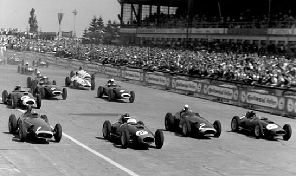
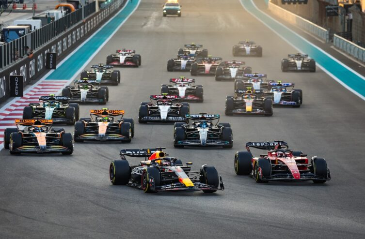

La Fórmula 1 es una categoría de automovilismo donde los mejores pilotos del mundo compiten en circuitos cerrados con coches altamente tecnológicos y rápidos. Cada carrera, llamada "Gran Premio", se lleva a cabo en diferentes países y consiste en un número determinado de vueltas alrededor de un circuito. Los pilotos deben completar las vueltas en el menor tiempo posible, y ganan puntos según su posición final. El objetivo es acumular la mayor cantidad de puntos a lo largo de la temporada para convertirse en campeón.
Además de la habilidad del piloto, el trabajo del equipo es crucial. Cada escudería tiene ingenieros y mecánicos que se encargan de diseñar, construir y ajustar los coches para maximizar su rendimiento. Las estrategias de carrera, como cuándo hacer paradas para cambiar neumáticos, también son fundamentales. Todo esto se combina en un espectáculo emocionante que incluye velocidad, tácticas y tecnología de vanguardia.
1950: Se celebra la primera temporada del Campeonato Mundial de Fórmula 1. Las primeras carreras incluyen el Gran Premio de Mónaco y el Gran Premio de Italia. Ferrari y Alfa Romeo son las escuderías más destacadas.
Juan Manuel Fangio se consagra como uno de los primeros grandes campeones, ganando el título en 1951, 1954, 1955, 1956 y 1957.
1955: La tragedia de Le Mans afecta la percepción de la F1, llevando a un mayor enfoque en la seguridad.
1960: La competencia se diversifica, con pilotos como Phil Hill y Jack Brabham
ganando campeonatos. Brabham se convierte en el primer piloto en ganar un campeonato con un coche que lleva su nombre (Brabham).
1965: El diseño de los coches comienza a evolucionar, con el uso de chasis más ligeros y motores más potentes.
1966: La introducción de la regla de los motores de 3 litros provoca cambios en la competición. Los coches se vuelven más sofisticados.
1968: Se presenta el innovador Lotus 49, diseñado por Colin Chapman, que introduce el motor como parte estructural del chasis, marcando un hito en el diseño de coches de F1.
La F1 empieza a ganar popularidad mundialmente, con más carreras fuera de Europa y un aumento en la cobertura mediática.
1969: Jackie Stewart gana su primer campeonato, destacándose como uno de los mejores pilotos de la época. La temporada es notable por el aumento de la competencia y la introducción de mejoras en la seguridad.
Seguridad: A lo largo de estos años, los accidentes mortales impulsan una creciente preocupación por la seguridad de los pilotos y la necesidad de regulaciones más estrictas.
Innovación técnica: La F1 ve un avance constante en la tecnología, con el uso de materiales más ligeros y aerodinámica avanzada.

Los Años 70
Jochen Rindt se convirtió en el primer campeón póstumo tras su trágica muerte durante la temporada. Los accidentes fatales marcaron este periodo, lo que llevó a una creciente preocupación por la seguridad. Jackie Stewart ganó su segundo título, y las medidas de seguridad comenzaron a tomar más importancia.
Emerson Fittipaldi se destacó al ganar su primer campeonato con Lotus, introduciendo innovaciones como alas aerodinámicas.
Jackie Stewart logró su tercer título en una temporada dominada por su equipo, Tyrrell.
En 1974, Fittipaldi obtuvo su segundo campeonato al unirse a McLaren, mientras Niki Lauda se coronó campeón en 1975 con Ferrari, estableciendo al equipo como líder.
La temporada de 1976 fue dramática, con James Hunt ganando el título en medio de la recuperación de Lauda tras un grave accidente en Nürburgring, lo que puso en entredicho la seguridad de la competición.
Lauda volvió en 1977 para ganar su segundo campeonato, mientras que se seguían implementando mejoras en la seguridad de los circuitos y coches. En 1978, Mario Andretti se coronó campeón con Lotus, aprovechando el diseño de "efecto suelo" que revolucionó la aerodinámica.
Finalmente, en 1979, Jody Scheckter ganó su único campeonato con Ferrari en una temporada marcada por una intensa competencia entre Ferrari y otros equipos como Ligier y Williams. La década fue testigo de cambios significativos en la tecnología y la seguridad, sentando las bases para el futuro de la Fórmula 1.
Los Años 80
Durante la década de 1980, la Fórmula 1 vivió una era de gran competitividad y cambios significativos en tecnología y regulaciones.
Al inicio de la década, Nelson Piquet se coronó campeón en 1981, liderando un periodo en el que Brabham destacó con innovaciones técnicas.
En 1982, la temporada fue trágica, con varios accidentes y la muerte de pilotos, lo que intensificó el debate sobre la seguridad. Keke Rosberg se llevó el título en un año lleno de sorpresas.
En 1983, Nelson Piquet logró su segundo campeonato, esta vez con Brabham, consolidando su estatus como uno de los grandes de la época.alt=""> La llegada de turboalimentación en los motores se convirtió en un factor decisivo, permitiendo a algunos equipos superar a otros en potencia.
La competencia se intensificó en 1984, con Niki Lauda y Alain Prost protagonizando una emocionante lucha por el campeonato, que Lauda ganó por un margen muy estrecho. En 1985, Prost se llevó el título, comenzando a establecerse como uno de los pilotos más dominantes de la década.
1986 fue otro año de rivalidad intensa, con Prost y Mansell luchando por el título. Finalmente, Prost se proclamó campeón nuevamente. En 1987, Nelson Piquet volvió a alzarse con el campeonato, logrando su tercer título, mientras que el uso de motores turbo alcanzaba su punto máximo.
La década culminó con la llegada de nuevos talentos, como Ayrton Senna, quien comenzaría a dejar su huella en la F1. La era de los motores turbo comenzó a cerrar su ciclo, y la seguridad seguía siendo una preocupación creciente, lo que llevó a la implementación de nuevas regulaciones.
En resumen, los años 80 en la Fórmula 1 fueron testigos de rivalidades emocionantes, avances tecnológicos y un enfoque renovado en la seguridad, sentando las bases para la evolución futura del deporte.
Los Años 90
En 1990, Ayrton Senna se coronó campeón del mundo con McLaren-Honda, después de una temporada llena de controversias. La rivalidad con Alain Prost alcanzó su punto culminante en el Gran Premio de Japón, donde Senna, tras un polémico incidente, se aseguró el título. Esta temporada estuvo marcada por la tensión entre ambos pilotos y la pelea por el campeonato fue muy reñida.
El siguiente año, en 1991, Senna defendió su título y logró su tercer campeonato del mundo. McLaren continuó siendo el equipo más dominante, con el apoyo del motor Honda. Senna tuvo una temporada muy sólida, ganando varias carreras y afianzando su dominio. Mientras tanto, Alain Prost se retiró de la Fórmula 1 a finales de ese año, dejando espacio para nuevos pilotos que emergían como grandes contendientes.
En 1992, Nigel Mansell (Williams-Renault) se proclamó campeón del mundo. Fue una temporada en la que Williams presentó el FW14B, un coche muy avanzado con tecnología como la suspensión activa, lo que le dio una ventaja clara sobre los demás equipos. Mansell aprovechó al máximo las capacidades de su coche, superando a su compañero de equipo Riccardo Patrese y a pilotos como Senna y Prost para conseguir su primer título mundial.
En 1993, Alain Prost regresó a la Fórmula 1 con Williams-Renault y logró su cuarto campeonato mundial. Prost dominó la temporada, en la que enfrentó a rivales como Senna, pero el Williams FW15C con motor Renault fue imbatible. Esta temporada también estuvo marcada por la lucha entre Prost y Senna, quienes no solo competían en la pista, sino también en la guerra psicológica que había caracterizado su relación en años anteriores.
La temporada de 1994 estuvo marcada por una tragedia. Michael Schumacher (Benetton-Ford) se consagró campeón mundial, obteniendo su primer título en una campaña muy dramática. La tragedia de la F1 golpeó cuando Ayrton Senna, uno de los grandes favoritos para el título, perdió la vida durante el Gran Premio de San Marino. También murió Roland Ratzenberger en la misma fecha, lo que generó un fuerte llamado a mejorar la seguridad en la F1. A pesar de estas tragedias, Schumacher aprovechó la superioridad de su Benetton para conseguir el campeonato, a pesar de que la temporada fue muy competitiva.
En 1995, Michael Schumacher defendió con éxito su título mundial, repitiendo su coronación con Benetton-Renault. La temporada fue dominada por Schumacher, quien aprovechó el rendimiento superior de su coche para ganar varias carreras. Damon Hill (Williams) fue su principal rival, pero Schumacher se mostró muy superior a lo largo de la temporada.
En 1996, Damon Hill (Williams-Renault) se coronó campeón, en una temporada en la que el dominio de Williams comenzó a decaer.
El equipo británico no fue tan fuerte como en los años anteriores, pero Hill logró mantenerse competitivo durante toda la temporada. Schumacher, quien ahora formaba parte de Ferrari, terminó segundo en el campeonato, pero el coche de Ferrari aún no era tan competitivo como el de Williams.
En 1997, Jacques Villeneuve (Williams-Renault) logró su primer título mundial, convirtiéndose en el campeón más joven de la historia en ese momento. La temporada fue marcada por su feroz rivalidad con Michael Schumacher, quien estuvo involucrado en una polémica durante el Gran Premio de Europa, cuando intentó bloquear a Villeneuve para impedir su victoria en el campeonato. A pesar de la controversia, Villeneuve logró ganar el título en un final de temporada lleno de tensiones.
En 1998, Mika Häkkinen (McLaren-Mercedes) logró su primer campeonato del mundo. La temporada estuvo marcada por el dominio de McLaren, que presentó un coche muy competitivo. Michael Schumacher (Ferrari) fue el principal rival de Häkkinen, pero no pudo evitar que el finlandés ganara el título. Häkkinen demostró su destreza al ganar el campeonato de manera consistente, mientras que Schumacher sufrió varias decepciones a lo largo del año.
En 1999, Mika Häkkinen defendió con éxito su título y se coronó campeón por segunda vez. Esta temporada fue una de las más reñidas, con Ferrari y Michael Schumacher como principales rivales.
Sin embargo, Schumacher sufrió un accidente en el Gran Premio de Gran Bretaña, lo que lo dejó fuera de varias carreras y permitió a Häkkinen mantener su ventaja en la lucha por el campeonato. Eddie Irvine, compañero de Schumacher en Ferrari, estuvo cerca de arrebatarle el título a Häkkinen, pero al final fue el piloto finlandés quien logró la victoria.
En 2000, Michael Schumacher (Ferrari) logró su primer título con la escudería italiana, rompiendo una sequía de 21 años sin títulos para Ferrari. La temporada estuvo marcada por el renacimiento de Ferrari, con un coche competitivo y la excelente labor de Schumacher. Después de una década de dominio de McLaren y Williams, Schumacher llevó a Ferrari de vuelta a la gloria, asegurando su primer título con el equipo italiano y marcando el inicio de una era dorada para la escudería.
Fórmula 1 Moderna
>
En 2001, Michael Schumacher (Ferrari) logró su segundo título con la escudería italiana, afianzando su dominio en la Fórmula 1. La temporada estuvo marcada por la continua mejora de Ferrari y su coche Ferrari F2001, que era extremadamente competitivo. David Coulthard (McLaren) y Mika Häkkinen (McLaren) fueron los principales rivales, pero la solidez de Schumacher y el coche de Ferrari les permitió ganar el campeonato con claridad.
En 2002, Michael Schumacher (Ferrari) dominó la temporada de manera aún más aplastante, consiguiendo su quinto título mundial. Ferrari y el Ferrari F2002 establecieron un nivel de competitividad superior, con Schumacher ganando 11 de las 17 carreras de la temporada, y convirtiéndose en el campeón más dominante de la década. Rubens Barrichello, su compañero de equipo, se mostró muy fuerte también, y Ferrari cosechó victorias de equipo. La temporada fue prácticamente un monólogo de Schumacher y Ferrari.
En 2003, la batalla entre Ferrari y Williams fue muy reñida. Michael Schumacher logró su sexto campeonato, pero esta vez la competencia fue mucho más dura, con pilotos como Juan Pablo Montoya (Williams) y Ralf Schumacher (Williams) luchando por el título. A pesar de algunas dificultades con el coche, Schumacher se destacó por su consistencia y habilidad para maximizar el rendimiento del Ferrari F2003-GA. La temporada fue una de las más tácticas de la década, con varios equipos luchando por el título hasta la última carrera.
En 2004, Michael Schumacher (Ferrari) vivió una de las temporadas más dominantes de la historia de la F1. Ganó 13 de las 18 carreras, rompiendo récords de victorias en una temporada y llevándose su séptimo título mundial. Ferrari y el F2004 fueron claramente superiores a cualquier otro equipo, y Schumacher, con su increíble talento y consistencia, desbordó a sus rivales, entre ellos a Kimi Räikkönen (McLaren), que quedó en segundo lugar en el campeonato.
En 2005, la era de Schumacher comenzó a ver su fin, ya que Fernando Alonso (Renault) se coronó campeón mundial, poniendo fin a una racha de cinco títulos consecutivos de Schumacher. Alonso se benefició de un coche muy competitivo, el Renault R25, y de una consistencia excepcional durante toda la temporada. La competencia entre Alonso y Schumacher fue muy intensa, y el joven piloto español aprovechó los errores de Schumacher y la caída en el rendimiento de Ferrari para conseguir su primer título.
En 2006, Fernando Alonso (Renault) defendió su título de manera impresionante, luchando hasta el final contra Michael Schumacher y Ferrari. Sin embargo, la temporada estuvo marcada por el regreso de Schumacher a su mejor nivel, peleando en cada carrera con Alonso. A pesar de la competencia feroz, Alonso mantuvo la calma y se llevó su segundo campeonato consecutivo, a pesar de una gran temporada por parte de Schumacher. El Renault R26 fue una máquina muy competitiva que le permitió a Alonso alzarse con el campeonato.
En 2007, la Fórmula 1 vivió una de sus temporadas más emocionantes. Kimi Räikkönen (Ferrari) se coronó campeón en una dramática lucha final con Lewis Hamilton (McLaren) y Fernando Alonso (McLaren). El campeonato estuvo marcado por la rivalidad interna en McLaren, que llevó a que ambos pilotos se disputaran el título de manera feroz. Räikkönen logró ganar el campeonato gracias a su victoria en el Gran Premio de Brasil, consiguiendo el campeonato por un solo punto de ventaja sobre Hamilton y Alonso.
En 2008, Lewis Hamilton (McLaren) logró su primer campeonato del mundo en una de las temporadas más emocionantes de la historia. Hamilton, quien debutó en la F1 con McLaren en 2007, consiguió el título en el último tramo de la temporada, superando a Felipe Massa (Ferrari) por un solo punto en el Gran Premio de Brasil. La temporada estuvo marcada por la rivalidad entre Ferrari y McLaren, y Hamilton mostró una gran madurez y talento al convertirse en el campeón más joven de la historia de la F1 en ese momento.
En 2009, Jenson Button (Brawn GP) sorprendió al mundo al ganar su primer campeonato mundial. El equipo Brawn GP, surgido de la fusión de Honda y su estructura, fue extremadamente competitivo, y Button se benefició de un coche con un rendimiento excepcional. La temporada fue también el final de la era de Schumacher en Ferrari, y Button se mostró muy sólido, consiguiendo un total de seis victorias y llevándose el título por delante de Sebastian Vettel (Red Bull) y Rubens Barrichello (Brawn GP).
En 2010, Sebastian Vettel (Red Bull Racing) logró su primer título mundial en una temporada muy competitiva. Vettel y su compañero de equipo, Mark Webber, dominaron la temporada, con el joven alemán imponiéndose por encima de los pilotos de Ferrari y McLaren. La lucha por el campeonato fue muy cerrada, pero finalmente Vettel se coronó campeón al final de la temporada, iniciando lo que sería una exitosa era para él y Red Bull.
En 2011, Sebastian Vettel (Red Bull Racing) defendió su título con gran éxito. La temporada estuvo marcada por el dominio de Red Bull, que continuó desarrollando su coche con gran efectividad. Vettel ganó la mayoría de las carreras y se aseguró el campeonato con varias carreras de anticipación, dejando atrás a pilotos como Jenson Button (McLaren) y Mark Webber (Red Bull).
En 2012, Vettel (Red Bull) se coronó campeón nuevamente, esta vez en una de las temporadas más competitivas y disputadas de su carrera. Aunque Ferrari mejoró notablemente, el alemán continuó demostrando su consistencia y habilidad para sacar el máximo rendimiento del coche en cada carrera.
En 2013, Vettel (Red Bull Racing) completó su cuarta y última victoria consecutiva en el campeonato de pilotos. A pesar de los esfuerzos de Ferrari y McLaren, el dominio de Red Bull y la habilidad de Vettel fueron demasiado para la competencia. La temporada fue histórica, con Vettel ganando 9 carreras consecutivas, lo que consolidó su lugar como uno de los grandes campeones de la F1.
En 2014, comenzó una nueva era con el dominio de Mercedes. Lewis Hamilton y Nico Rosberg fueron los principales contendientes, y Hamilton se coronó campeón mundial por segunda vez en su carrera. Mercedes mostró un rendimiento superior a todos los demás equipos, y la temporada estuvo marcada por la intensa rivalidad interna en el equipo entre Hamilton y Rosberg.
En 2015, Lewis Hamilton (Mercedes) continuó con su dominio de la F1, alzándose con su tercer título mundial. Mercedes volvió a ser el equipo más fuerte, y Hamilton mostró su increíble talento y consistencia a lo largo de la temporada. La competencia más cercana vino de su compañero de equipo, Nico Rosberg, quien también tuvo una destacada temporada.
En 2016, Nico Rosberg (Mercedes) sorprendió al mundo al ganar su primer campeonato mundial. Rosberg superó a Hamilton en la última parte de la temporada, logrando su primer título mundial en su carrera antes de anunciar su retiro sorpresa de la Fórmula 1. La temporada estuvo llena de altibajos para Mercedes, pero Rosberg logró mantenerse firme y se llevó el campeonato.
En 2017, Lewis Hamilton (Mercedes) regresó a la cima, consiguiendo su cuarto título mundial. La temporada fue muy competitiva, con Sebastian Vettel (Ferrari) como el principal contendiente. Hamilton mostró su consistencia y su capacidad para aprovechar las oportunidades en cada carrera, a pesar de los desafíos de Ferrari.
En 2018, Hamilton (Mercedes) se llevó su quinto campeonato mundial. La temporada estuvo marcada por una gran lucha con Sebastian Vettel (Ferrari), pero Hamilton logró la victoria en varias carreras clave y consiguió el título en la última parte de la temporada.
En 2019, Hamilton (Mercedes) dominó nuevamente, asegurando su sexto título mundial. A pesar de la competencia de Ferrari y Red Bull, el rendimiento de Mercedes y el talento de Hamilton fueron demasiado para sus rivales.
En 2020, Lewis Hamilton (Mercedes) completó una temporada histórica al ganar su séptimo campeonato mundial, igualando el récord de Michael Schumacher. La temporada estuvo marcada por la pandemia de COVID-19 y un calendario reducido, pero Hamilton continuó mostrando su dominio y llevando a Mercedes a la victoria en casi todas las carreras.
En 2021, la Fórmula 1 vivió una de las temporadas más emocionantes y controvertidas de la historia. Max Verstappen (Red Bull Racing) y Lewis Hamilton (Mercedes) lucharon por el campeonato hasta la última carrera en Abu Dabi. La temporada estuvo marcada por una feroz rivalidad entre los dos pilotos, que intercambiaron victorias en numerosas ocasiones. Finalmente, Verstappen se coronó campeón tras una polémica decisión del director de carrera en la última vuelta de la última carrera, lo que desató una gran controversia y debates sobre las reglas de la F1. Fue el primer título de Verstappen, poniendo fin a los siete años consecutivos de dominio de Mercedes.
En 2022, Max Verstappen (Red Bull Racing) dominó la temporada de manera aún más aplastante. Con un coche extremadamente competitivo, Verstappen logró 15 victorias en 22 carreras, rompiendo el récord de victorias en una temporada. La temporada también marcó la introducción de nuevas regulaciones técnicas que cambiaron el diseño de los coches, lo que permitió a Red Bull aprovechar mejor su rendimiento. Verstappen se coronó campeón de forma temprana, sin que sus rivales, como Charles Leclerc (Ferrari) y Sergio Pérez (Red Bull), pudieran competir al mismo nivel. Esta temporada consolidó a Verstappen como uno de los grandes pilotos de la era moderna.
En 2023, Max Verstappen (Red Bull Racing) continuó su dominio de la Fórmula 1, ganando su tercer campeonato consecutivo. La temporada fue una confirmación del increíble rendimiento de Red Bull y de Verstappen, quien logró una impresionante cantidad de victorias a lo largo del año, mientras que su compañero de equipo, Sergio Pérez, también luchaba por estar en lo más alto. La competencia más cercana vino de pilotos como Lewis Hamilton (Mercedes) y Charles Leclerc (Ferrari), pero los avances de Red Bull fueron insuperables. La rivalidad entre Verstappen y Pérez también generó titulares, con Verstappen superando a su compañero en varias ocasiones en un equipo dominado por Red Bull.

En 2024, la Fórmula 1 sigue siendo testigo del dominio de Max Verstappen (Red Bull Racing), quien ha demostrado ser uno de los pilotos más completos y exitosos de la historia de la F1. A lo largo de la temporada, Verstappen ha continuado rompiendo récords y manteniendo su competitividad a un nivel altísimo. Los equipos como Ferrari y Mercedes siguen luchando por acercarse a la superioridad de Red Bull, mientras que nuevos talentos como Lando Norris (McLaren) y George Russell (Mercedes) comienzan a ser cada vez más competitivos. Las regulaciones siguen evolucionando, y el panorama de la F1 sigue siendo emocionante, con Verstappen consolidando aún más su legado en el automovilismo.
En 2024, la lucha por el campeonato sigue siendo reñida, pero Red Bull Racing parece ser el equipo a batir, mientras que las mejoras de Ferrari, Mercedes y McLaren apuntan a una temporada más competitiva en los próximos años.

.jpg)